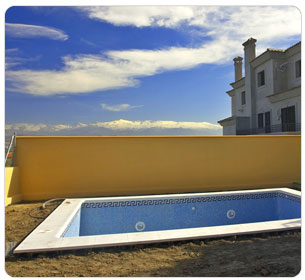

Todo proceso constructivo, requiere del trabajo de un grupo numeroso de personal. Procecon busca a la hora de realizar sus obras, que desde el inicio hasta el final, el cliente se encuentre sumamente satisfecho con todos los trabajos realizados. Para ello, se dota de un equipo técnico altamente cualificado y con bastante experiencia, el cual unido a un equipo de profesionales de la construcción – encargados de obra, oficiales, peones,…-le confieren una gran solidez a su estructura organizativa y la llevan a ser una empresa, que cumple las expectativas suscitadas por el cliente.
Todo ello, se puede mostrar viendo los resultados obtenidos en las múltiples obras realizadas y en ejecución.
